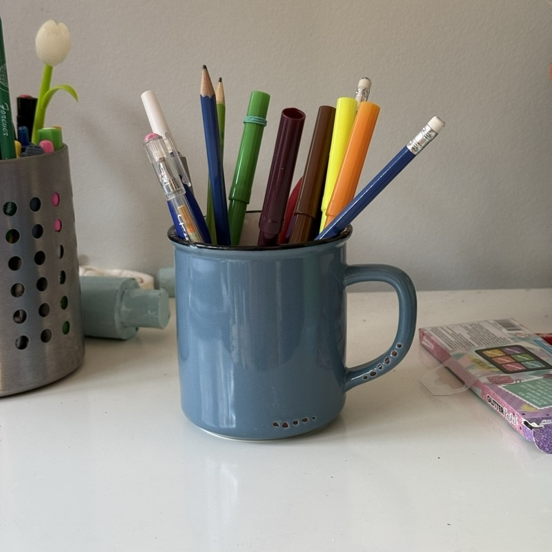
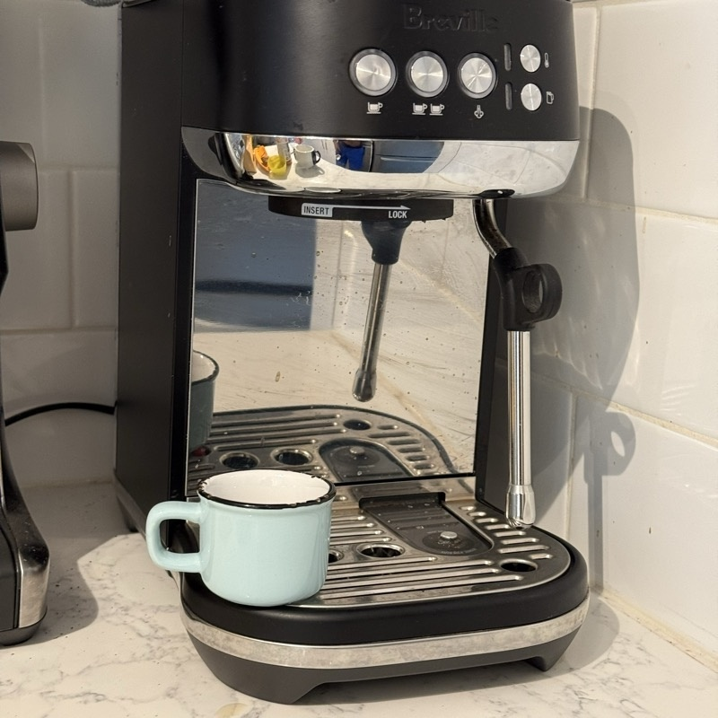
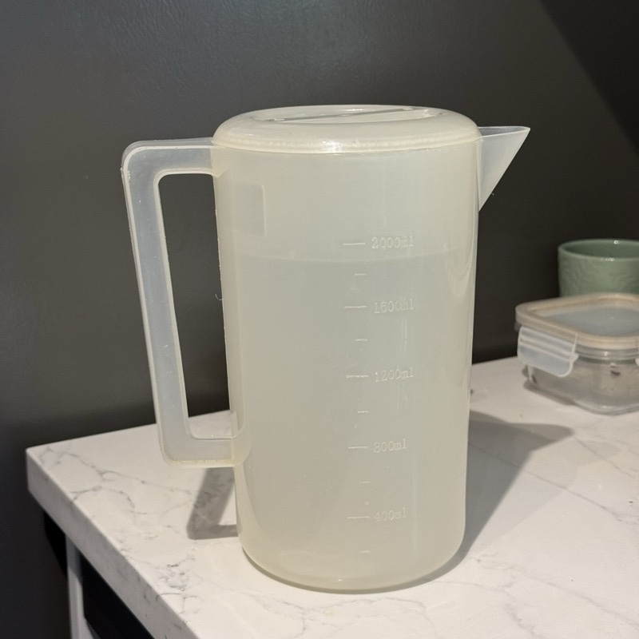
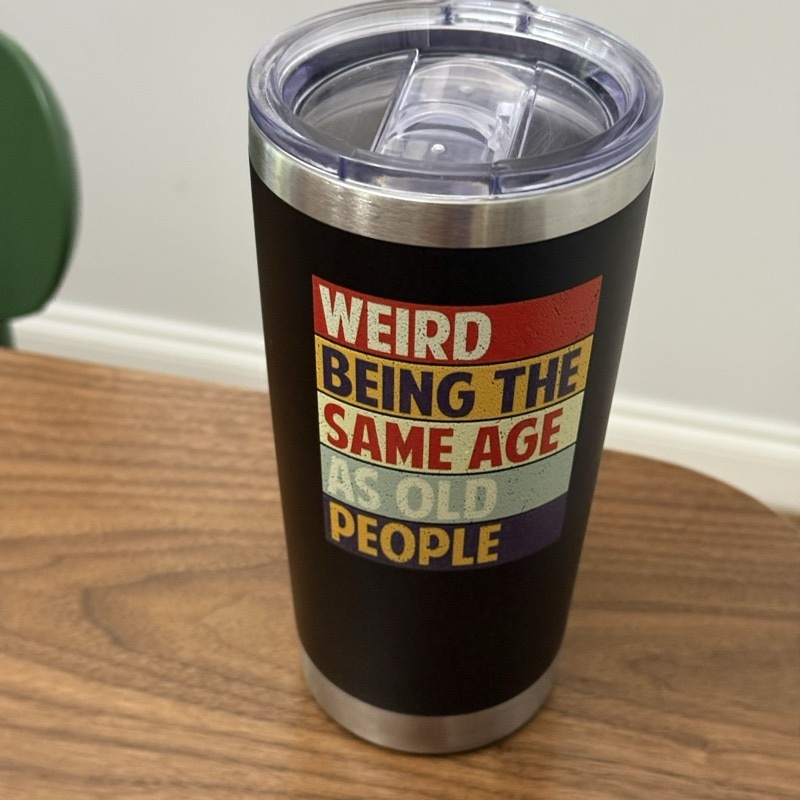
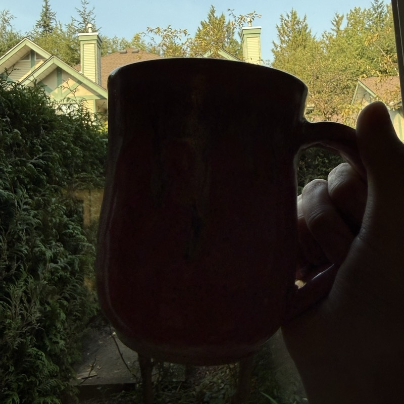

Workshop Edition
For the first time in this tour, you get an answer with an explanation. On your laptop, open any free chat assistant that accepts image uploads (Claude, ChatGPT, Gemini — your choice), and try this on the images below.
Use the same wording for each image so your results are comparable:
Look at this photo and answer in exactly this format, with nothing else: PREDICTION: yes or no — is there a coffee mug visible anywhere in this image? REASONING: one or two sentences on what visual evidence led to that answer.
Click any image to open it full-size, then save it and upload it to your chat assistant.

ambiguous_01.jpg
a mug repurposed as a pen holder

ambiguous_06.jpg
a toy/miniature mug

pitcher_01.jpg
not a mug, but close

travel_tumbler_01.jpg
also not a mug, also close

texture_context_06.jpg
backlit, tricky lighting
Pick your most interesting result (a surprising success, a confident wrong answer, anything that made you go "huh") — we'll go around the room before the AMA.